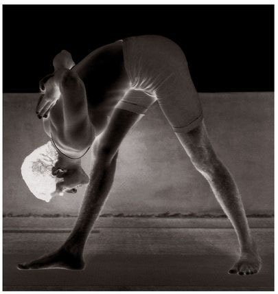

7. UTTHITA HASTA PADANGUSHTASANA
There are fourteen vinyasas in this asana. The 2nd, 4th, 7th, 9th, 11th, and 14th vinyasas are the states of the asana.
METHOD
First, join the legs together, hold the arms by the sides, and stand erect. Then, doing puraka, place the left hand on the waist, straighten the right arm, raise the right leg, catch hold of the big toe with the right hand, and straighten the knees, chest, and waist (see figure); this is the 1st vinyasa. Holding this posture and doing rechaka, touch the nose to the knee, which is lifted, and hold, doing puraka and rechaka as much as possible; this is the 2nd vinyasa. Then, doing puraka slowly, lift the head, straighten the chest and waist, and stand as shown in the figure for the 1st vinyasa; this is the 3rd vinyasa. Next, doing rechaka, bring the right leg out to the right, hold the arm, leg, waist, and chest straight, and look to the left, breathing fully and deeply as much as possible; this the 4th vinyasa. Then, doing puraka, bring the leg back to the center, as in the 1st vinyasa; this is the 5th vinyasa. Next, doing rechaka and keeping the leg lifted, touch the nose to the right knee; this is the 6th vinyasa. Then, doing puraka, lift the head, straighten the chest and waist, and stand straight, placing the hands on the waist and keeping the raised right leg extended straight, while breathing fully and deeply as much as possible; this is the 7th vinyasa. Then, doing rechaka, bring the right leg down. Repeat the above for the left leg.
PARSHVOTTANASANA

BENEFITS
Utthita Hasta Padangushtasana loosens the hip joints, destroys defects of the testicles and male organ of generation, and purifies and strengthens the vertebral column, waist, hips, and lower abdomen. It also eliminates constipation.